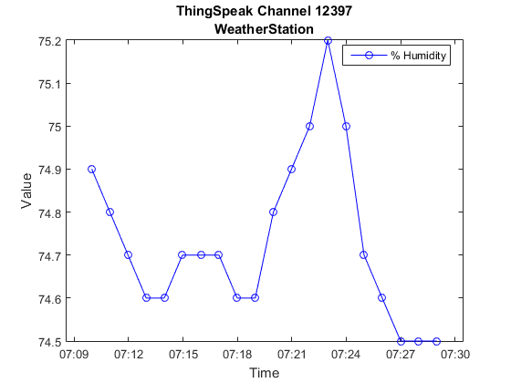
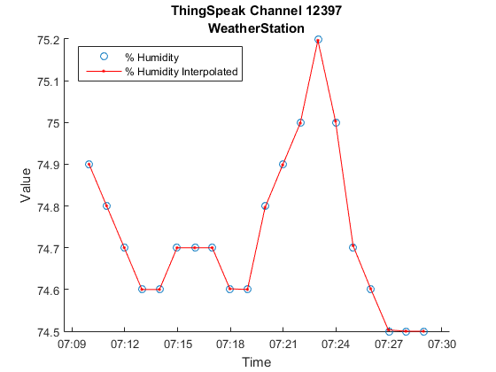

Interpolate Missing Points Using thingSpeakRead
This example shows how to retrieve data from ThingSpeak.com and interpolate missing points in the time series.
Contents
Download the data
View channel information.
[~,~,channelInfo] = thingSpeakRead(12397); channelInfo
channelInfo =
ChannelID: 12397
Name: 'WeatherStation'
Description: 'MathWorks Weather Station, West Garage, Natick, MA...'
Latitude: 42.2997
Longitude: -71.3505
Altitude: 60
Created: [1x1 datetime]
Updated: [1x1 datetime]
LastEntryID: 625927
FieldDescriptions: {1x8 cell}
FieldIDs: [1 2 3 4 5 6 7 8]
URL: 'https://api.thingspeak.com/channels/12397/feed.json?'
The channel information includes:
- Name of the channel
- Channel description
- Date of creation
- Date of last update
- Last entry ID
- Field descriptions
- Associated Field IDs
Let us read the last 20 points of the data 3rd field (% Humidity) of this channel.
[data,timestamps] = thingSpeakRead(12397, 'NumPoints', 20, 'Fields', 3);
Examine the data
Retrieve the timestamps and notice gaps in time between each timestamp.
timeBetweenTimestamps = diff(timestamps)
timeBetweenTimestamps = 00:01:00 00:01:00 00:01:00 00:01:00 00:01:00 00:01:01 00:01:00 00:01:00 00:01:00 00:01:00 00:01:00 00:01:00 00:01:00 00:01:00 00:01:00 00:01:00 00:01:01 00:01:00 00:01:00
The data shows inconsistent sample spacing. It also shows some missing data points. Plot the data.
figure plot(timestamps,data,'ob-') title(sprintf('ThingSpeak Channel %d\n%s',channelInfo.ChannelID,channelInfo.Name)) xlabel('Time') ylabel('Value') legend(channelInfo.FieldDescriptions{3}, 'Location','best'); axis tight
Interpolate and resample the data for a consistent sample spacing.
Create the new timestamp vector for the interpolated data
To interpolate the data, create a new timestamp vector with equal spacing between timestamps using LINSPACE. Set the spacing to be equal to the minimum spacing between the times in the original timestamp vector.
timestampsInterp = timestamps(1):min(diff(timestamps)):timestamps(end)
timestampsInterp = Columns 1 through 3 17-Aug-2015 07:09:58 17-Aug-2015 07:10:58 17-Aug-2015 07:11:58 Columns 4 through 6 17-Aug-2015 07:12:58 17-Aug-2015 07:13:58 17-Aug-2015 07:14:58 Columns 7 through 9 17-Aug-2015 07:15:58 17-Aug-2015 07:16:58 17-Aug-2015 07:17:58 Columns 10 through 12 17-Aug-2015 07:18:58 17-Aug-2015 07:19:58 17-Aug-2015 07:20:58 Columns 13 through 15 17-Aug-2015 07:21:58 17-Aug-2015 07:22:58 17-Aug-2015 07:23:58 Columns 16 through 18 17-Aug-2015 07:24:58 17-Aug-2015 07:25:58 17-Aug-2015 07:26:58 Columns 19 through 20 17-Aug-2015 07:27:58 17-Aug-2015 07:28:58
The result shows consistent timestamp spacing.
diff(timestampsInterp)
ans = Columns 1 through 7 00:01:00 00:01:00 00:01:00 00:01:00 00:01:00 00:01:00 00:01:00 Columns 8 through 14 00:01:00 00:01:00 00:01:00 00:01:00 00:01:00 00:01:00 00:01:00 Columns 15 through 19 00:01:00 00:01:00 00:01:00 00:01:00 00:01:00
Interpolate the data
Use INTERP1 to resample and interpolate the data on the new timestamp vector.
dataInterp = interp1(datenum(timestamps),data,datenum(timestampsInterp).');
Plot the original and interpolated data
Plot the original and interpolated data.
figure hold on plot(timestamps,data,'o') plot(timestampsInterp,dataInterp,'r.-') hold off title(sprintf('ThingSpeak Channel %d\n%s',channelInfo.ChannelID,channelInfo.Name)) xlabel('Time') ylabel('Value') legend(channelInfo.FieldDescriptions{3},sprintf('%s Interpolated',channelInfo.FieldDescriptions{3}),'Location','best') axis tight